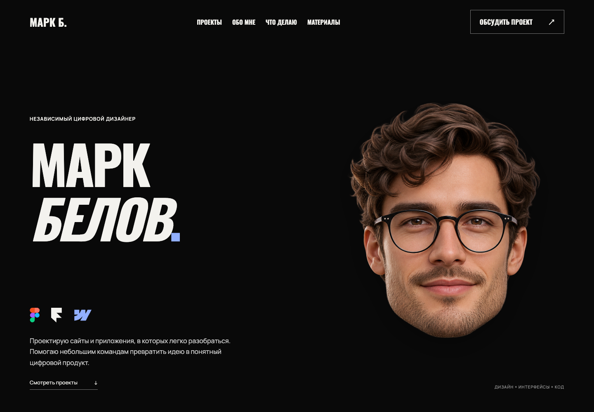
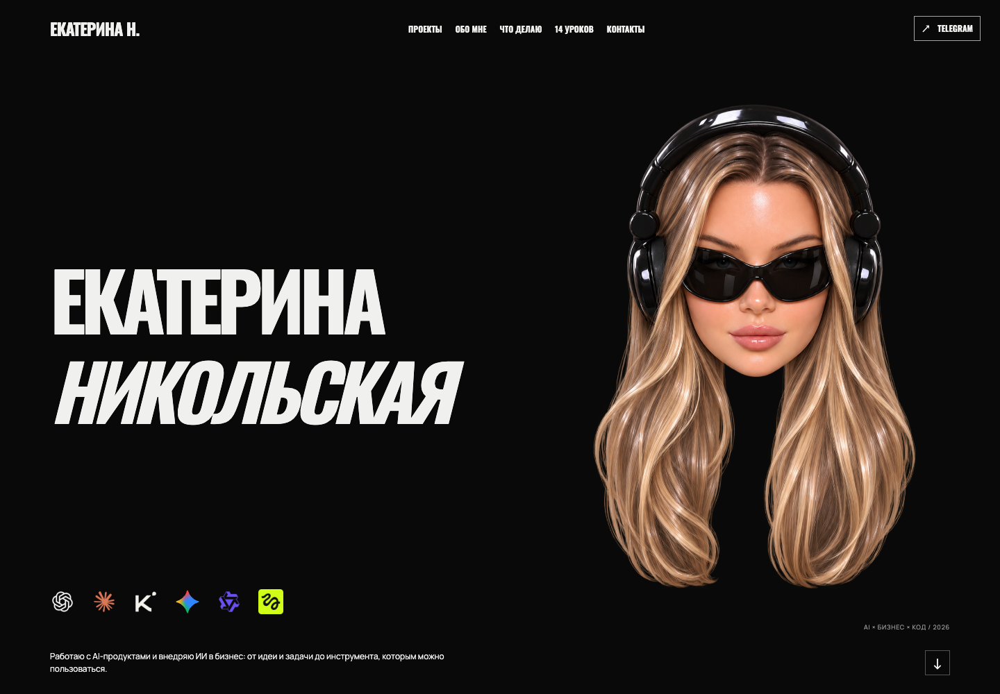
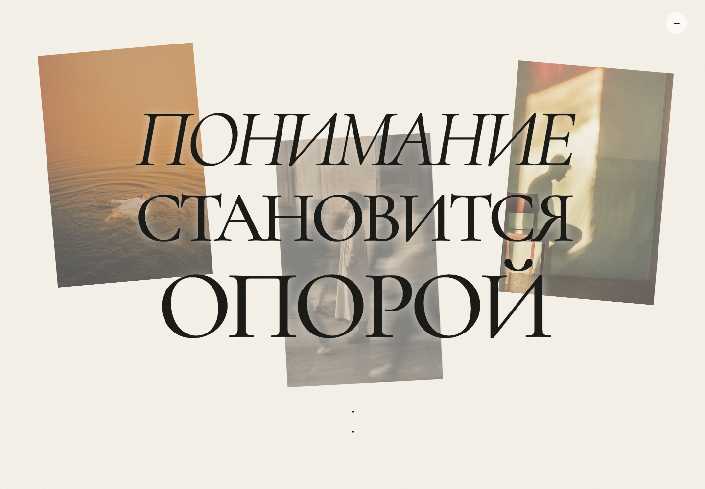

Ваш первый сайт с ИИ: визитка и сайт проекта
ПОСМОТРИТЕ, ЧТО ПОЛУЧИТСЯ
Вот сайт-визитка, который мы собрали по промпту из этого гайда: Марк Белов — вымышленный дизайнер. Откройте пример, посмотрите разделы и попробуйте кнопки.
Посмотреть результат по промпту ↗Это ориентир по стилю и структуре. У вас будут свои имя, тексты, фотографии и контакты. ИИ может по-разному собрать детали — их можно уточнить по скриншотам.

Здесь всё по порядку: установите два скилла → выберите дизайн → заполните один промпт → прикрепите фотографии и отправьте его. Установка скиллов — отдельный подготовительный шаг. В промпте для сайта уже только само задание.
1. Перед началом установите скиллы и выберите референс
Скиллы — дополнительные инструкции, которые помогают ИИ собирать структуру и дизайн сайта. Перед созданием лендинга установите эти два:
- Landing Page Design — открыть скилл — структура страницы и подача информации.
- Taste Skill — открыть скилл — композиция, типографика и визуальная проверка.
Нужен ли аккаунт GitHub?
Нет. Оба скилла лежат в публичных репозиториях: их можно открыть и скачать без регистрации. GitHub здесь — просто место, где автор хранит файлы. Нажимать Sign up, создавать свой репозиторий и подключать GitHub к Codex для этого шага не нужно. Нужен вход в приложение, в котором вы работаете с Codex.
Способ 1 — проще всего: отправьте запрос в Codex
Обычный чат ChatGPT может объяснить установку, но сам по себе не установит файлы на ваш компьютер. Запрос ниже отправляйте в Codex с доступом к локальным файлам. Если вы работаете в ChatGPT, сначала откройте режим Codex, как в официальном быстром старте. Ручное скачивание ZIP при этом не требуется.
- Откройте Codex и создайте чат. Если приложение ещё не установлено, начните с официального быстрого старта.
- Скопируйте запрос ниже и отправьте его отдельным сообщением, до промпта сайта. Вручную скачивать папки не нужно — попросим Codex сделать это.
- Дождитесь сообщения об успешной установке обоих навыков. Если приложение предложит подтвердить установку, проверьте названия и подтвердите.
- Следующим сообщением напишите: «Проверь, доступны ли landing-page-design и design-taste-frontend. Покажи названия и пути к их SKILL.md». Если навыки не появились, начните новый чат или перезапустите приложение. Не переходите к сайту, пока установка не подтверждена.
- Теперь переходите к материалам и промпту выбранного сайта ниже. Повторять установку для каждого нового сайта не нужно.
Это запрос только для установки скиллов:
Используй $skill-installer и установи для моего пользователя два навыка:
1. landing-page-design: https://github.com/elayadesign/ai-design-skills/tree/main/skills/landing-page-design
2. design-taste-frontend: https://github.com/Leonxlnx/taste-skill/tree/main/skills/taste-skill
Прочитай инструкции авторов, выполни установку и проверь результат. Сообщи отдельно о каждом навыке и объясни, нужен ли перезапуск приложения. Сайт на этом шаге не создавай.
Официальная инструкция по скиллам. Дополнительный навык Hallmark — альтернативный подход к дизайну; для этого урока он не требуется.
Где находятся скиллы: ссылки и скриншоты
Красной рамкой выделено, куда смотреть или нажимать. Скриншоты сделаны без входа в GitHub. Надписи на GitHub могут быть на английском — названия кнопок ниже приведены точно.
1. Landing Page Design — структура лендинга
Открыть репозиторий ai-design-skills · Открыть сам скилл landing-page-design
2. Taste Skill — визуальный дизайн
Открыть репозиторий taste-skill · Открыть сам скилл taste-skill
Название папки — taste-skill, а имя навыка внутри — design-taste-frontend. Это один и тот же скилл, не нужно искать третий.
Способ 2 — скачать ZIP, если установка по ссылке не сработала
Этот способ запасной. Если первый уже сработал, пропустите его.
- Откройте репозиторий первого скилла по ссылке выше.
- Нажмите зелёную кнопку Code. Это меню скачивания, а не кнопка установки.
- В меню нажмите Download ZIP. Сохраните архив в «Загрузки».
- Повторите для второго репозитория.
- В Codex прикрепите скачанные ZIP, если приложение это позволяет, или укажите точные пути к архивам в «Загрузках». Отправьте запрос под скриншотами.
Landing Page Design: Code → Download ZIP
Taste Skill: Code → Download ZIP
После скачивания отправьте в Codex:
Установи два скилла из приложенных ZIP-архивов или по указанным мной локальным путям.
В архиве ai-design-skills найди папку skills/landing-page-design.
В архиве taste-skill найди папку skills/taste-skill — внутреннее имя навыка design-taste-frontend.
Проверь инструкции авторов. Установи каждый навык целиком со вспомогательными папками и файлами, не только SKILL.md, в мою пользовательскую папку скиллов Codex. Если навык уже установлен, не перезаписывай его молча: проверь текущую версию и сообщи результат.
Проверь оба навыка и покажи их названия и пути к SKILL.md. Объясни, нужен ли новый чат или перезапуск. Сайт пока не создавай.
Как понять, что всё готово: Codex подтвердил установку обоих навыков и при проверке видит их инструкции. Просто открытая страница GitHub, скачанный архив или текст SKILL.md в переписке — ещё не установленный скилл.
Заранее посмотрите дизайн на Awwwards
Это те самые два референса, на основе которых мы делали сайты. Они нужны как визуальные примеры, скачивать шаблон или покупать его не нужно.
- The Romans — референс сайта-визитки. Контрастный чёрно-белый дизайн и крупные узкие заголовки. В нашей версии — имя слева, аватар справа и квадратное фото в разделе «Обо мне».
- Where Opportunity Takes Root — референс «Опоры». Тёплый бумажный фон, крупная антиква, фотоколлаж и движение при прокрутке. Подойдёт школе, студии или другому проекту.
Выберите один вариант. Его ссылка уже включена в соответствующий промпт. Подробное визуальное ТЗ внутри описывает нашу адаптацию, поэтому не нужно самостоятельно собирать инструкции по всему гайду. Для ещё более близкого результата можно приложить скриншот понравившегося экрана.
На чём будет работать сайт?
В этом уроке мы создаём статический сайт на HTML, CSS и JavaScript, без React.
- HTML (
index.html) — содержимое: заголовки, тексты, фотографии и разделы страницы. - CSS (
style.css) — оформление: цвета, шрифты, отступы и расположение блоков на компьютере и телефоне. - JavaScript (
script.js) — поведение: анимация за курсором, меню и другие интерактивные элементы. Простые раскрывающиеся блоки могут работать и средствами HTML. - Папка
images— фотографии и иллюстрации вашего сайта.
Браузер открывает HTML, подключает стили, изображения и скрипт — и показывает страницу. React — отдельная библиотека для интерфейсов; для этой визитки она не требуется. Не нужно выбирать между «HTML или JavaScript»: здесь они выполняют разные задачи и работают вместе.
Вы не пишете эти файлы вручную. Вы заполняете один промпт, прикладываете фото, а Codex создаёт файлы и запускает предпросмотр. Установка скиллов не добавляет их на сайт: они помогают Codex выполнить работу. Сайт пока находится на вашем компьютере; на втором уроке разберём GitHub и деплой — публикацию по общей ссылке. Форма, которая действительно отправляет заявки, потребовала бы отдельного сервиса; в этом уроке используем ссылки на ваши контакты.
2. Подготовьте свои материалы
Создайте на компьютере пустую папку, например Мой сайт. В отдельную папку Материалы сложите фотографии и логотип. Оригиналы сохраните у себя отдельно. Переименуйте файлы понятно: portrait.jpg, work-01.jpg, product-01.png и так далее.
Для сайта-визитки нужны: имя, занятие в одном предложении, 2–4 направления работы, короткий рассказ о себе, основная ссылка для связи и портрет или готовый 3D-аватар для первого экрана. Работы или отзывы добавляйте только если они настоящие и их можно публиковать. Если аватара нет, используйте своё фото или заранее создайте отдельное изображение в 3D-стиле.
Для сайта школы, студии или проекта нужны: название, описание, аудитория, направления, контактная ссылка и 3–6 собственных фотографий. Логотип необязателен. Год основания, проекты, города, клиенты и результаты нужны только тогда, когда вы можете их подтвердить. Не переносите фотографии или контакты с сайта-примера на свой сайт.
Укажите один главный способ связи: полную ссылку https://t.me/..., адрес почты для mailto: или номер для tel:. Кнопка без настоящего адреса выглядит рабочей, но разочарует посетителя.
3. Откройте рабочую папку
- Скачайте настольное приложение ChatGPT для своей системы, установите и войдите в аккаунт. В новом чате выберите Codex и откройте созданную папку
Мой сайт. В этой папке Codex сможет создавать и менять файлы. Это соответствует официальному быстрому старту. - Для установки навыков через команды скачайте LTS с официальной страницы Node.js и установите как обычную программу. После установки откройте новое окно терминала и проверьте команды
node --versionиnpx --version. Для Taste Skill нужен Node.js 22 или новее и Chrome, Edge либо Chromium. Если терминал пока пугает, используйте способ установки через запрос к Codex ниже.
Обычный чат ChatGPT может помочь написать текст и объяснить шаги, но для создания и проверки файлов в вашей папке используйте Codex в приложении. Альтернатива без локальной папки — ChatGPT Work с Sites, если Sites доступен вашему аккаунту; порядок публикации там другой.
4. Сайт-визитка — один цельный промпт

Дизайн-референс: The Romans на Awwwards.
Выберите свою профессию, тексты, фото и контакты. Замените все квадратные скобки. Пример показывает композицию; имя Екатерины, её проекты и аватар переносить в свой сайт не нужно.
Создай с нуля в открытой папке мой одностраничный сайт-визитку целиком, со всеми разделами из ТЗ. Сам создай файлы, запусти локально и проверь результат. Объясняй действия понятно новичку.
Дизайн-референс: https://www.awwwards.com/sites/the-romans
Если страница недоступна, работай по моим скриншотам и подробному описанию ниже. Не утверждай, что изучил сайт, если не смог его открыть.
ВИЗУАЛЬНОЕ ТЗ — МАКСИМАЛЬНО БЛИЗКО К ПОКАЗАННОМУ ОБРАЗЦУ
1. Общий характер: контрастный типографический сайт, почти чёрный фон #090909, молочно-белый текст #F3F2EE, холодный голубой #91AFFF. Без градиентных карточек, разноцветных плашек и декоративных теней.
2. Шапка: слева короткое имя, по центру компактные ссылки на разделы, справа Telegram или мой контакт в прямоугольной кнопке с тонкой рамкой. Боковые поля около 5% ширины. Левый край имени в шапке совпадает с левым краем основного заголовка, логотипов и описания.
3. Первый экран на компьютере: двухколоночная композиция. Левая часть примерно 55%, правая 45%. Имя и фамилия в две строки, крупный узкий жирный шрифт с кириллицей наподобие Oswald 700. Фамилия курсивом. Заголовок ориентировочно 80–130 px на экране 1440 px, подобрать по длине моего имени. Сохрани разборчивость и силуэт образца, не растягивай буквы искусственно.
4. Справа — мой вырезанный портрет или готовая 3D-голова на прозрачном фоне, крупно, почти на всю доступную высоту первого экрана. Без прямоугольной подложки, без обрезанных волос и без перекрытия имени. Черты лица не менять.
5. Под именем — одна строка логотипов моих инструментов высотой около 32–40 px, равные интервалы 24–32 px. Ниже короткое описание обычным шрифтом 16–18 px. Не добавляй инструменты, которых нет в моём списке.
6. Ниже: крупные заголовки, заметные изображения работ, тонкие разделители и просторные поля. Чередуй чёрный и тёплый светлый #F3F0E8 фон. Контактный блок — светлый, заголовок чёрный, большая ссылка со стрелкой, как в этом ТЗ. Не упаковывай каждый абзац в отдельную карточку.
7. Лёгкий плавный отклик аватара на курсор: заметный, но без скачков; до 20–30 градусов по горизонтали и 10–15 по вертикали. Это декоративный наклон изображения, не настоящий поворот лица. На сенсорных устройствах оставь спокойную статичную композицию.
8. Если приложены скриншоты результата, они важнее общего референса: повторяй сетку, относительные размеры, интервалы, расположение элементов и иерархию максимально близко. Меняй только мои тексты, изображения и ссылки. Точное совпадение оценивай по скриншотам одинаковой ширины, а не по памяти.
Хочу чёрный первый экран, крупную выразительную типографику: имя и фамилия слева в две строки, справа мой портрет или 3D-аватар. Ниже слева короткое описание и ряд логотипов инструментов, которыми я действительно пользуюсь. Верхняя ссылка с моим именем, заголовок, логотипы и описание должны начинаться на одной вертикальной линии. Остальные секции чередуют светлый и тёмный фон. Не копируй чужие имя, тексты, фото, контакты и кейсы.
МОИ ДАННЫЕ
Имя: [ВАШЕ ИМЯ]
Фамилия или название: [ВПИШИТЕ]
Профессия и специализация: [ВПИШИТЕ]
Кому и с чем помогаю: [ВПИШИТЕ]
Короткое описание под именем: [1–2 ПРЕДЛОЖЕНИЯ]
Обо мне: [3–5 ПРЕДЛОЖЕНИЙ ИЛИ ТЕЗИСЫ]
Направления: [1–4 НАЗВАНИЯ И КОРОТКИЕ ОПИСАНИЯ]
Реальные работы: [НАЗВАНИЯ, ОПИСАНИЯ, ФОТО ИЛИ «НЕТ»]
Мой курс или полезные материалы: [НАЗВАНИЕ, УРОКИ ИЛИ «НЕТ»]
Основное действие кнопки: [НАПИСАТЬ / ОБСУДИТЬ ПРОЕКТ / ДРУГОЕ]
Контакт: [ПОЛНЫЙ URL, EMAIL ИЛИ ТЕЛЕФОН]
Акцентный цвет: [ЦВЕТ ИЛИ «ХОЛОДНЫЙ ГОЛУБОЙ»]
ФАЙЛЫ
Мой портрет или готовый 3D-аватар первого экрана: [ИМЯ ФАЙЛА]
Моя фотография для блока «Обо мне»: [ИМЯ ФАЙЛА]
Мои инструменты и их логотипы: [ПЕРЕЧЕНЬ И ФАЙЛЫ ИЛИ «НЕ НУЖНЫ»]
Изображения работ: [ФАЙЛ → НАЗВАНИЕ РАБОТЫ ИЛИ «НЕТ»]
Используй установленные landing-page-design и design-taste-frontend. Следуй этому ТЗ и приложенным скриншотам. Все изображения сохрани внутри папки сайта. Используй мой готовый аватар без изменения лица.
Структура в порядке образца: шапка → чёрный первый экран → светлый блок крупных направлений деятельности → светлый блок «Обо мне» → чёрный блок работ → светлый блок услуг → чёрный блок курса/полезных материалов с раскрывающимися пунктами → светлый контактный блок → чёрный футер.
В блоке «Обо мне» слева подпись, крупный заголовок «Привет, я [имя]», два коротких абзаца и кнопка связи. Справа моя фотография строго квадратная: aspect-ratio:1; width:min(100%,500px); object-fit:cover; без растягивания и фильтров. На телефоне максимум 380px и не шире контейнера. Не позволяй высоте изображения растянуть весь раздел. Шапка, имя первого экрана, «Обо мне», абзацы и кнопка начинаются с общей вертикали: 5vw на компьютере и 20px при ширине до 650px. Текст — Manrope, заголовки — Oswald 700 с кириллицей. Не подменяй их похожим широким шрифтом, если исходные доступны.
Контакты сохраняют светлый фон и чёрную типографику как в этом ТЗ, а не произвольный голубой блок. Не придумывай отзывы, клиентов, цифры, квалификацию, результаты и проекты. Если данных для раздела нет, убери его.
На компьютере имя слева, изображение справа без наложения. На телефоне сначала имя, затем аватар, описание и контакт. Логотипы поставь в одну линию с равными отступами; на узком экране аккуратно адаптируй. Не используй логотипы как доказательство партнёрства.
Можно добавить лёгкий наклон аватара за курсором. Это PNG, а не настоящая 3D-модель: не обещай вращение вокруг головы. Для prefers-reduced-motion отключи движение. Не закрывай кнопки изображением.
Сделай статический сайт: index.html, style.css, script.js при необходимости, папка images. Пути относительные: ./style.css, ./images/… Все кнопки ведут к моим контактам или существующим секциям. Не создавай форму без отправки. Проверь ширины 1440, 768 и 390 px, загрузку фото, ссылки, читаемость, фокус клавиатуры и отсутствие горизонтального скролла. Покажи скриншоты и путь к папке. Пока не публикуй — деплой будет на втором уроке.
Отправьте весь выбранный промпт одним сообщением: он уже включает все разделы. Запросы на точечные правки ниже нужны только после получения первой полной версии.
5. Сайт проекта — один цельный промпт

Дизайн-референс: Where Opportunity Takes Root на Awwwards.
«Опора» — вымышленная школа в учебном примере. Этот промпт подойдёт вашей школе, студии, компании или другому проекту. Подставьте свою тему и данные; текст о психологии не нужен, если ваш проект о другом.
Создай с нуля одностраничный презентационный сайт моего проекта целиком, со всеми разделами из ТЗ, в открытой папке. Сам создай файлы, запусти локально и проверь. Объясняй действия простыми словами.
Дизайн-референс: https://www.awwwards.com/sites/where-opportunity-takes-root
Если референс не открывается, используй приложенные скриншоты и ТЗ ниже; не выдумывай результат просмотра.
ВИЗУАЛЬНОЕ ТЗ — МАКСИМАЛЬНО БЛИЗКО К ПОКАЗАННОМУ ОБРАЗЦУ
1. Фон — тёплая бумага #F3EEE3 с едва заметной фактурой, текст #191914. Заголовки очень крупные, контрастная антиква с кириллицей наподобие Cormorant Garamond; отдельное ключевое слово курсивом. Служебные подписи — простой шрифт без засечек.
2. Справа сверху круглая кнопка меню около 44 px, на телефоне 37 px. По центру сверху небольшая подпись с моим названием КАПСОМ: как «ШКОЛА ОПОРА», но с моими данными. Шрифт Arial без засечек, 12 px, вес 500, межбуквенный интервал .04em; на телефоне 10 px. Без «(01)», без значка и цветных квадратиков. Не делай её большим жирным заголовком. Никакой обычной широкой панели с десятком ссылок.
3. Первый экран — выразительный коллаж с заголовком в 3–4 строки по центру. Ровно три вертикальные фотографии: слева выше, справа выше, третья ближе к центру ниже. Их ширина около 20–26% экрана. Заголовок занимает около 80–90% ширины, размеры подбирай под мои слова. Избегай отдельной короткой строки с огромной пустотой вокруг.
4. Наложение текста на фотографии — только если оно разрешено в моих данных ниже. Для совпадения с текущим образцом на первом экране используй прозрачность крайних фото .64, центрального .48 и наклоны −5°, +5°, −3°. Это оформление слоёв, исходные файлы не изменяй. В остальных секциях фото непрозрачные. Если я явно попрошу непрозрачный коллаж, используй opacity:1 и объясни, что это отличается от образца.
5. При скролле фотографии мягко опускаются вниз с разной скоростью. Последнее слово заголовка увеличивается от своего центра, оставаясь точно по горизонтальному центру экрана. Не допускай смещения влево, обрезки или постоянного самопроизвольного движения.
6. Второй экран — спокойный центрированный текст о проекте, крупная антиква, две фотографии по краям, достаточно места для чтения. Следующий раздел можно сделать полноэкранной фотографией с коротким контрастным тезисом.
7. Направления — две крупные вертикальные фотокарточки со смещением по высоте, не мелкая одинаковая сетка. Название поверх фото, короткое описание, ссылка со стрелкой. Полезные материалы — большие фото, подписи под ними, тонкое подчёркивание ссылок.
8. Справа — компактный вертикальный индикатор разделов, снизу — небольшая округлая кнопка основного действия и номер текущего раздела. Не закрывай ими контент на телефоне.
9. Не добавляй случайные отзывы, графики с выдуманными процентами, лишние иконки или яркие карточки. Если приложены скриншоты желаемого результата, их сетка, размеры, отступы и композиция важнее общих рекомендаций. Сравни результат с ними на одинаковой ширине.
Мне нравится редакционная подача: тёплый светлый фон с едва заметной текстурой бумаги, крупные заголовки с засечками, курсивные акценты, фотоколлаж, свободные поля, круглое меню и навигация по разделам. Повтори композицию описанного здесь дизайна; адаптируй длину строк под мои материалы, не придумывая другую сетку. Не копируй название «Опора», её тексты и фотографии.
МОЙ ПРОЕКТ
Название: [ВПИШИТЕ]
Тема и суть: [1–2 ПРЕДЛОЖЕНИЯ]
Для кого: [АУДИТОРИЯ]
Что человек получает: [ПОНЯТНОЕ ОПИСАНИЕ]
Главный заголовок: [МОЯ ФРАЗА ИЛИ «СФОРМУЛИРУЙ ПО МОИМ ТЕЗИСАМ»]
О проекте: [ТЕКСТ ИЛИ ТЕЗИСЫ]
Направления, услуги или программы: [2–4 НАЗВАНИЯ И ОПИСАНИЯ]
Как устроена работа или обучение: [РЕАЛЬНЫЕ ЭТАПЫ]
Подтверждённые факты: [ФАКТЫ ИЛИ «НЕТ»]
Полезные материалы: [НАЗВАНИЯ И ССЫЛКИ ИЛИ «НЕТ»]
Контакт и основная кнопка: [ПОЛНЫЙ URL И ТЕКСТ КНОПКИ]
ФАЙЛЫ И ВИЗУАЛ
Фото первого экрана: [3 ФАЙЛА И ЧТО НА НИХ]
Фото раздела «О проекте»: [ФАЙЛЫ]
Фото направлений: [ФАЙЛ → КАКОЙ КАРТОЧКЕ СООТВЕТСТВУЕТ]
Логотип: [ФАЙЛ ИЛИ «НЕ НУЖЕН»]
Палитра: [ЦВЕТА ИЛИ ПРИЛОЖЕННЫЙ СКРИНШОТ]
Наложение текста на фото: [ДА, КАК В ОБРАЗЦЕ / НЕТ — ЭТО ИЗМЕНИТ КОМПОЗИЦИЮ]
Используй установленные landing-page-design и design-taste-frontend. Следуй этому ТЗ и приложенным скриншотам. Сохрани мои фотографии локально. Не меняй исходные файлы, яркость и цвет; прозрачность слоёв первого экрана задана выше, остальные фотографии оставь непрозрачными.
Структура из восьми глав: первый экран; о проекте; полноэкранный смысловой тезис на фото; две карточки направлений; полноэкранный блок подхода; модель или этапы работы; библиотека материалов; контакты. Сохрани эту последовательность, адаптируя тему к моему проекту. Если для секции совсем нет данных, не выдумывай их: используй мои подходящие тезисы или убери секцию и пересчитай навигацию. Не придумывай отзывы, лицензии, преподавателей, результаты, клиентов и цифры. Не копируй целиком чужие тексты. Если нужны факты из источников, кратко перескажи их и добавь ссылки.
На первом экране заголовок должен читаться целиком. Если разрешено наложение на фото, выбери размещение с достаточным контрастом. Если не разрешено, выдели под текст отдельное место. Не добавляй дополнительное размытие или затемнение сверх заданных выше настроек образца. На телефоне перестрой коллаж.
При скролле фотографии могут плавно смещаться вниз с разной скоростью. Последнее слово заголовка можно мягко увеличивать относительно центра экрана. Оно не должно уезжать в сторону. При prefers-reduced-motion отключи движение.
Сделай статический сайт: index.html, style.css, script.js и папка images. Используй относительные пути к файлам. Меню ведёт к существующим секциям, кнопки — к моим контактам или точным ссылкам. Не создавай форму без отправки. Проверь 1440, 768 и 390 px, загрузку фото, ссылки, читаемость и отсутствие горизонтального скролла. Покажи скриншоты и папку результата. Пока не публикуй — деплой будет на втором уроке.
Можно поменять тему, сохранив композицию: школа языков, интерьерная студия, мастерская, курс, сообщество. Попросите адаптировать смысл разделов, а не просто заменить название.
6. Проверка и точные правки
Не нужно редактировать код вручную. Откройте локальную ссылку, которую дал Codex, и просмотрите всю страницу на компьютере и телефоне. Для исправлений используйте конкретный запрос:
Проверь готовый сайт в браузере на ширинах 1440 и 390 px. Исправь наложения изображений на текст, слишком тесные слова, обрезанные заголовки, неработающие изображения, горизонтальную прокрутку и ошибки в консоли. Проверь каждую кнопку и покажи мне таблицу «текст кнопки → точный адрес». После исправлений сделай новые скриншоты. Не меняй остальные согласованные разделы.
Если что-то выглядит не так, приложите скриншот и напишите: Исправь только выделенное на скриншоте: [ЧТО ИМЕННО]. Остальной макет сохрани. Это точнее, чем «сделай красивее».
Если дизайн не нравится — покажите на скриншоте
Прямо сделайте скриншот и скажите, что поправить. Не нужно знать названия шрифтов или разбираться в коде. Можно обвести место, поставить стрелку или написать «второй экран, заголовок справа».
- Откройте сайт и сделайте скриншот конкретного места.
- На Mac:
Shift + Command + 4. На Windows:Win + Shift + S. На телефоне используйте обычный снимок экрана. - Прикрепите картинку к сообщению в Codex. Если можете, отметьте проблемное место.
- Напишите, что именно изменить и какой результат хотите получить.
- Попросите показать новый скриншот компьютера и телефона.
На скриншоте отметила место, которое мне не нравится. Исправь только его:
— [ГДЕ: первый экран / секция «Обо мне» / кнопка внизу]
— [ЧТО: слова сливаются / текст мелкий / фото закрывает заголовок]
— [КАК НАДО: увеличь пробелы / сделай крупнее / сдвинь фото вправо]
Остальные цвета, блоки и композицию сохрани. После правки проверь компьютер и телефон и покажи новые скриншоты.
Меняйте по одной группе вещей: сначала композицию, затем шрифты, затем цвета и детали. Так проще понять, какая правка улучшила результат. Перед большой переделкой попросите сохранить текущую версию отдельной копией.
Нужны другие цвета — найдите палитру в Pinterest
Откройте Pinterest, найдите понравившуюся палитру и пришлите её скриншот. Запросы для поиска: website color palette, cream black blue palette, «палитра для сайта», «оливковый бежевый палитра».
Не обязательно искать готовый сайт: подойдёт картинка с сочетанием цветов. Укажите, какой цвет куда применить. Если на палитре есть HEX-коды вроде #F5F1E8, скопируйте их — так цвет получится точнее. По скриншоту ИИ может только подобрать близкий оттенок.
Мне нравится палитра на прикреплённом скриншоте из Pinterest. Возьми из неё:
— самый светлый оттенок для основного фона;
— самый тёмный для текста;
— [ОПИШИТЕ ЦВЕТ] для кнопок и небольших акцентов.
Сначала выпиши выбранные HEX-коды. Примени палитру ко всему сайту, проверь читаемость текста и кнопок. Композицию, фотографии и тексты не меняй. Если точный оттенок со скриншота определить нельзя, подбери близкий и скажи об этом.
Для начала хватит нейтрального фона, контрастного текста и одного акцентного цвета. Важные кнопки должны быть заметны; светло-серый текст на светлом фоне лучше не использовать.
Как объяснить ИИ нужный стиль
Покажите пример и объясните, что именно в нём нравится. Слов «красиво», «дорого», «современно» мало: у каждого своё представление. Лучше дать 1–3 скриншота и описать конкретные признаки.
| Что описать | Как сказать обычными словами |
|---|---|
| Общее ощущение | Спокойный и сдержанный; яркий и смелый; тёплый и личный |
| Композиция | Много свободного места; крупный заголовок; фото справа; текст слева |
| Шрифт | Тонкий с засечками, как в журнале; простой без засечек; жирные большие заголовки |
| Цвета | Молочный фон, почти чёрный текст и холодный голубой для акцентов |
| Изображения | Крупные фотографии; вырезанные предметы; свободный коллаж |
| Формы | Прямые углы; тонкие линии; округлые кнопки; минимум рамок |
| Движение | Плавное появление при прокрутке; без постоянного вращения и прыжков |
Референс — это пример того, как должен выглядеть результат. Если на нём нравится только шрифт, так и напишите. Не просите скопировать всё, когда хотите взять лишь один элемент.
Готовый запрос про стиль
Хочу изменить визуальный стиль сайта. Прикладываю референсы и объясняю, что взять из каждого.
Скриншот 1: нравится [КОМПОЗИЦИЯ И РАЗМЕР ЗАГОЛОВКОВ].
Скриншот 2: нравится [ПАЛИТРА И ЦВЕТ КНОПОК].
Скриншот 3: нравится [РАСПОЛОЖЕНИЕ ФОТО / ШРИФТ / ДЕТАЛИ].
Общее ощущение: [СПОКОЙНЫЙ / РЕДАКЦИОННЫЙ / ТЕХНОЛОГИЧНЫЙ / ДРУГОЕ].
Фон: [ОПИШИТЕ]. Текст: [ОПИШИТЕ]. Акцент: [ОПИШИТЕ].
Шрифт: [С ЗАСЕЧКАМИ / БЕЗ ЗАСЕЧЕК, КРУПНЫЙ / СДЕРЖАННЫЙ].
Композиция: [ГДЕ ЗАГОЛОВОК, ФОТО И КНОПКА].
Не нравится: [ПЕРЕЧИСЛИТЕ: ТЕНИ, ГРАДИЕНТЫ, МЕЛКИЙ ТЕКСТ И Т. П.].
Сохрани мои тексты, контакты и фотографии. Сначала сделай первый экран в этом стиле для компьютера и телефона. Покажи скриншоты. После моего выбора перенеси стиль на остальные разделы. Перед переделкой сохрани текущую версию отдельной копией.
Пример понятного описания: «Хочу сайт как спокойный архитектурный журнал: молочный фон, чёрные тонкие заголовки с засечками, большие фотографии и много воздуха. Без цветных карточек и теней. Одна заметная кнопка вверху. На телефоне фото должно идти после заголовка».
Оценивайте не только красоту: имя и занятие должны читаться сразу, основное действие — быть заметным, а текст на телефоне — помещаться без обрезки.
7. Следующий урок — публикация
На втором уроке будем публиковать сайт на GitHub и изучать деплой.
В первом уроке мы создали сайт и проверили его на компьютере. Сейчас достаточно сохранить готовую папку проекта, фотографии и понравившуюся версию дизайна.
Что будет дальше
- Разберёмся, что такое GitHub, репозиторий и коммит.
- Загрузим файлы сайта в свой репозиторий.
- Изучим деплой — публикацию сайта из файлов проекта в интернете.
- Настроим GitHub Pages и получим публичную HTTPS-ссылку.
- Научимся обновлять сайт и возвращаться к предыдущей версии.
Что подготовить ко второму уроку
— Готовую папку сайта с index.html, стилями и изображениями.
— Проверенную локальную версию, которая вам нравится.
— Аккаунт заранее создавать не нужно: этот шаг пройдём на втором уроке.
Локальная ссылка с localhost работает на вашем компьютере. Ссылка для других людей появится после деплоя во втором уроке.
Сохрани текущую согласованную версию сайта. Проверь, что все файлы и изображения находятся в папке проекта. Напиши, где она лежит и как снова открыть локальный сайт. Публиковать пока не нужно — это сделаем на втором уроке.
8. Если что-то пошло не так
| Что случилось | Что попросить у Codex |
|---|---|
| На локальном сайте нет оформления | Проверь, что CSS подключён и все пути к изображениям ведут к существующим файлам. |
| Видна старая версия | Проверь локальный сервер и кеш браузера. Обнови страницу и покажи текущую версию сайта. |
| С телефона заголовок обрезан | Проверь ширину 390 px, перенеси заголовок и уменьшай размер только там, где это нужно. |
| Кнопка ведёт не туда | Составь таблицу всех href и исправь кнопку [НАЗВАНИЕ] на [ТОЧНЫЙ URL]. |
| ИИ придумал проект или отзыв | Удали неподтверждённый факт и проверь весь сайт на другие вымышленные утверждения. |
| Фото чужой компании показано как ваше | Замени фото на мой файл [ИМЯ ФАЙЛА] или убери блок. Не называй иллюстрацию нашей работой. |
Критерий готовности: ваш сайт показывает именно ваши материалы, открывается локально, читается на мобильной ширине, а все кнопки ведут туда, куда вы ожидаете.